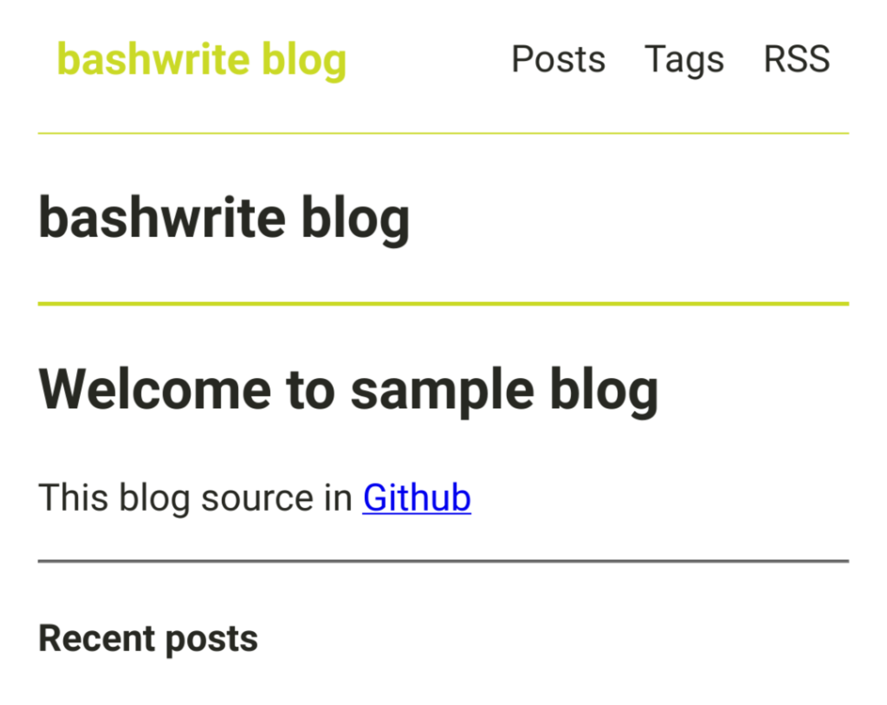

Images in the posts
Written in
Include images in posts
You can use markdown to include the images.
1. Prepare images.

2. Put your images in...
your-blog-directory/
├─ write/
│ ├─ new-post/ <<< New!
│ │ ├─ index.md <<< New!
│ │ ├─ screenshot.png <<< New!
├─ bw.sh
Create a new folder under the write/ folder. It’s best to name the folder after the title of the new post you will write.
Try to keep only 1 markdown file per folder if possible. This will make file management easier.
Name the markdown file index.md. This way, you can have a clean URL.
Also, include any images you want to put in this folder.
3. Write markdown.

Banner Image
1. Prepare image or image link
...
2. Frontmatter
title: ...
description: ...
date: ...
banner: https://upload.wikimedia.org/wikipedia/commons/thumb/e/ec/Mona_Lisa%2C_by_Leonardo_da_Vinci%2C_from_C2RMF_retouched.jpg/250px-Mona_Lisa%2C_by_Leonardo_da_Vinci%2C_from_C2RMF_retouched.jpg
Put your image path or image url in banner.